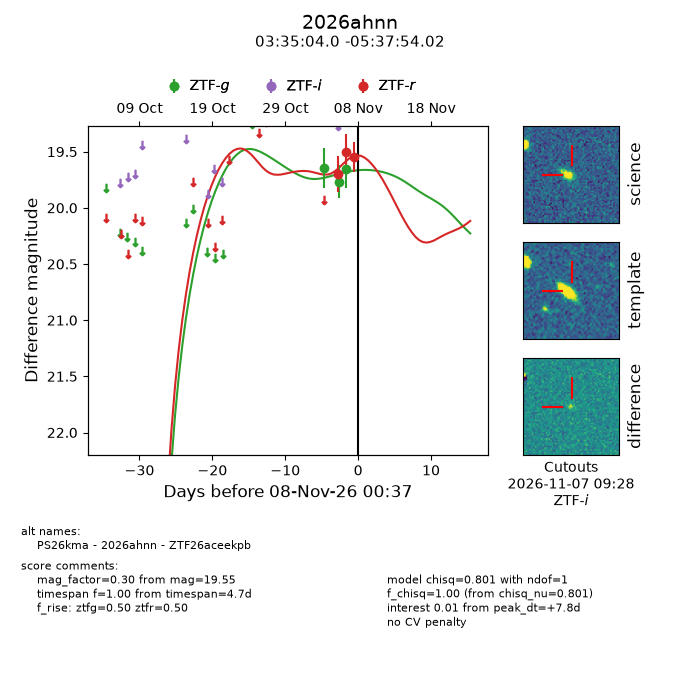
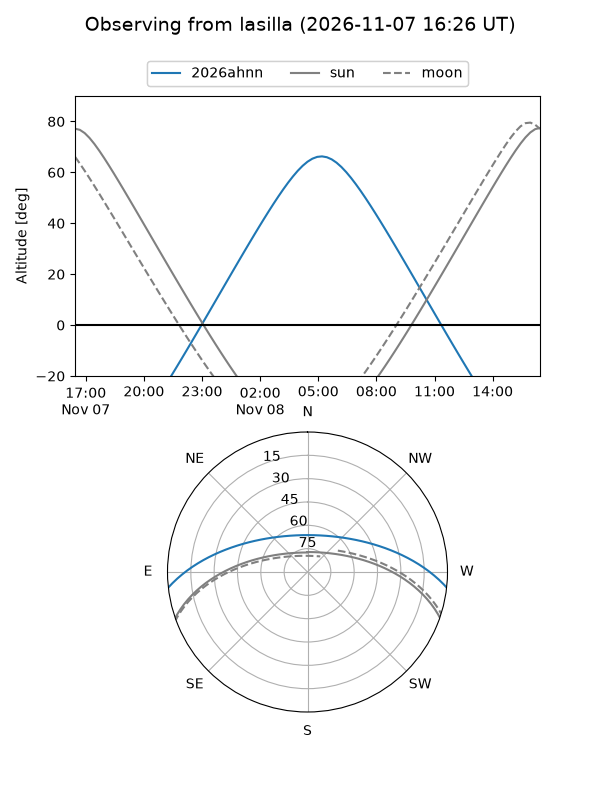
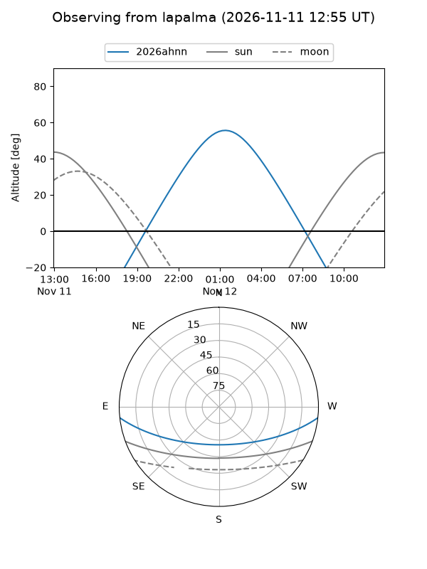
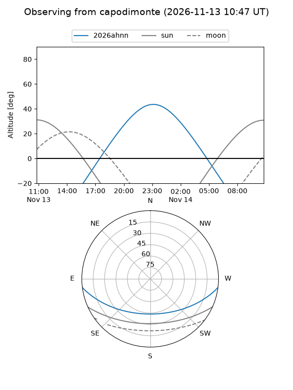
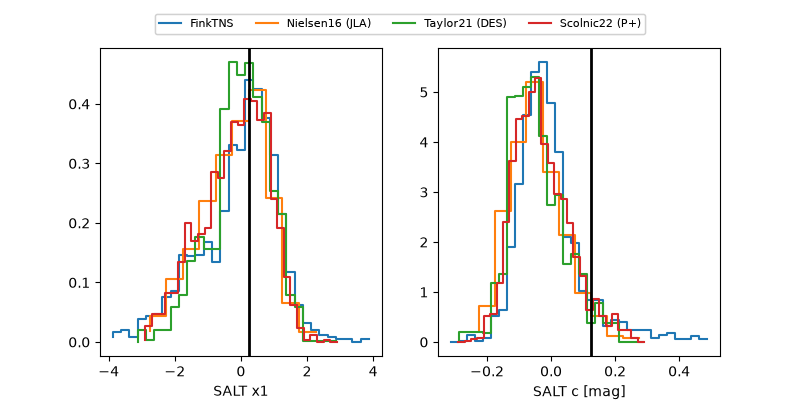

2026ahnn
Target 2026ahnn at 2026-11-08 00:39
Aliases and brokers:
FINK-ZTF: ztf.fink-portal.org/ZTF26aceekpb
Lasair-ZTF: lasair-ztf.lsst.ac.uk/objects/ZTF26aceekpb
ALeRCE-ZTF: alerce.online/object/ZTF26aceekpb
YSE-PZ: ziggy.ucolick.org/yse/transient_detail/2026ahnn
TNS name: wis-tns.org/object/2026ahnn
Direct TNS query: direct search
alt names
ZTF26aceekpb (ztf,fink_ztf)
2026ahnn (tns,yse)
PS26kma (panstarrs)
Coordinates:
equatorial (ra, dec) = 53.7668,-5.63167
equatorial (HMS+DMS) = 03:35:04.03,-05:37:54.02
galactic (l, b) = (191.5145,-45.57166)
Flags:
peak dt: +7.8
Photometry:
last ztfg=19.65, ztfr=19.55
3 ztfg, 3 ztfr detections
Lightcurve

Visibility



Additional plots
